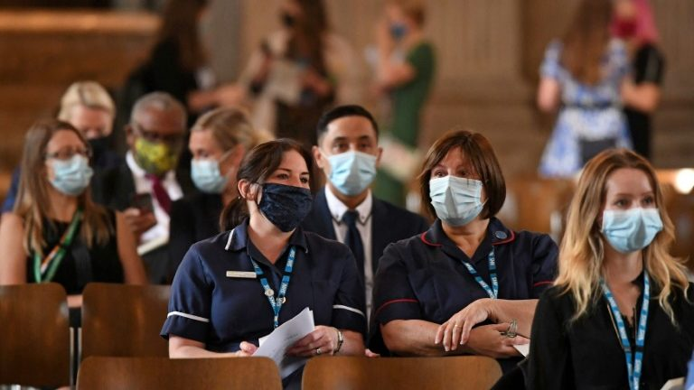

Números da pandemia seguem em ritmo de queda, mas destruição das florestas, emissões de carbono e desigualdade crescem como nunca.
Bolsonaro faz figuração no encontro do G20: não foi diplomático e nem construiu alianças para o futuro
Enquanto os governantes discutem os problemas da economia e da pandemia, a pobreza, a fome e a emergência ambiental e climática assumem protagonismo na dinâmica internacional.
Os líderes dos maiores países do mundo se reuniram em Roma, no último fim de semana de outubro, para a 16ª Cúpula do G20, grupo que agrega a África do Sul, Alemanha, Arábia Saudita, Argentina, Austrália, Brasil, Canadá, China, Coreia do Sul, Estados Unidos, França, Índia, Indonésia, Itália, Japão, México, Reino Unido, Rússia, Turquia e a União Europeia. Este conjunto de nações somam cerca de 60% da população mundial, 80% do PIB mundial e das emissões globais de gases de efeito estufa (GEE) e são responsáveis por 75% do comércio internacional.
Um dos assuntos debatidos foi “Mudanças Climáticas e Meio Ambiente”, As discussões giraram em torno da contenção da pandemia, da recuperação da economia global e o enfrentamento do aquecimento global.
O Brasil registrou, em outubro de 2021, os menores números mensais de casos e de mortes da covid-19 desde abril de 2020. Portanto, o país deixou para trás a fase de subida das curvas epidemiológicas e se encontra em uma etapa avançada de descida das curvas.
O Brasil já atingiu 75% da população vacinada com a primeira dose e 56% com a vacinação completa no final de outubro de 2021. Por conseguinte, tem diminuído o número de internações e óbitos da covid-19 em todo o território nacional.
O quadro geral da pandemia no Brasil em outubro de 2021 é positivo. Mas o perigo para o final do ano é as autoridades públicas de saúde e a população em geral subestimarem a doença. A flexibilização do uso de máscaras e o fim das medidas de distanciamento social devem ser acompanhadas com bastante atenção para que o país não seja surpreendido por novas cepas do coronavírus e novas mutações, como é o caso da subvariante Delta Plus que tem assustado o Reino Unido.
“Quando os atos violam a natureza, eles produzem desordens também contra a natureza” William Shakespeare (1564-1616), Macbeth.